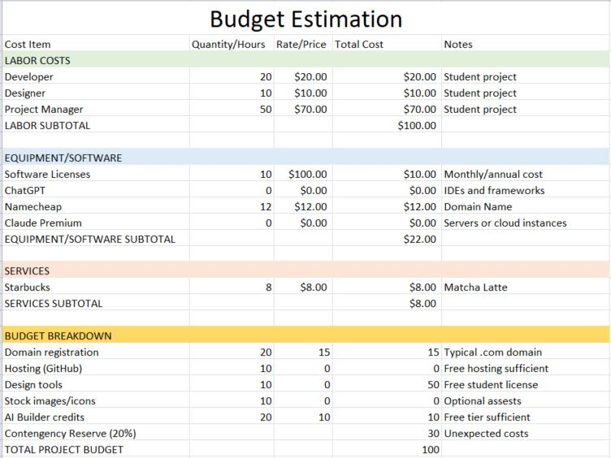
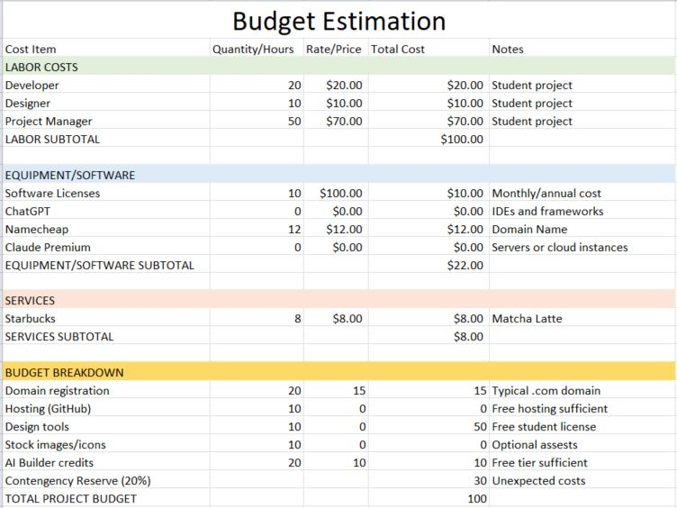

Situation: In my Project Management course at CSULA, our group of five was assigned a leadership-focused project requiring a detailed presentation within a tight two-week period. From the start, I recognized several potential risks: time constraints, uneven workload distribution, and reliance on Nearpod, a third-party presentation platform. I discovered that many of its best features were now locked behind a paywall, threatening our original project plan.
Task: As the Presentation Designer, I was responsible for ensuring our presentation was engaging, accessible, and delivered smoothly. When the paywall changes disrupted our initial design, I needed to find a quick alternative solution to preserve interactivity and ensure the final product met our expectations and deadlines.
Action: I immediately assessed the risks by identifying which features were no longer available and how that would affect our planned activities. To mitigate the issue, I restructured the slides to focus on free features that still allowed real-time engagement. I informed the team of the limitations, proposed adjustments, and coordinated updates so everyone could adapt their content accordingly. Before the presentation, I also created manual login instructions as a contingency plan in case the QR access failed—which ultimately proved helpful when the QR code expired during the live session.
Result: Despite these challenges, our presentation was completed successfully, and the audience actively participated by logging in manually. This experience highlighted how crucial it is to anticipate risks early and prepare contingencies, even for familiar tools. I now approach every project with a proactive mindset—identifying, assessing, and addressing potential risks before they escalate into last-minute problems.

 
